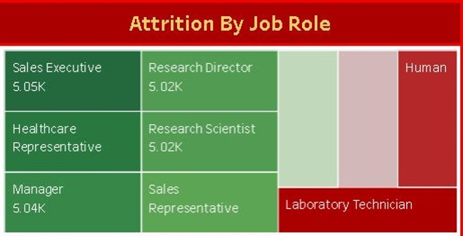
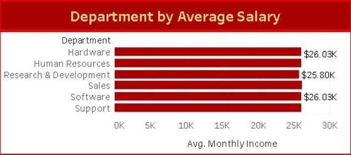
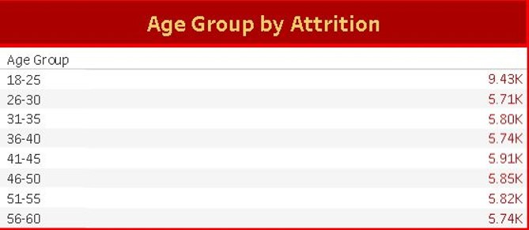
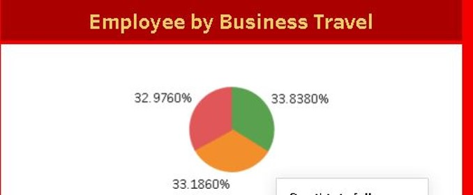

Storytelling with KPIs
1. Attrition by Department

This chart displays the attrition rate across various departments.
The Sales Department shows the highest attrition rate (8.45K), followed closely by Human Resources (8.42K) and Software (8.34K).
The Hardware Department records the lowest attrition rate (8.17K).
Insight:
High attrition in Sales and HR could be due to performance pressure, workload, or competitive job markets.
Lower attrition in Hardware indicates better stability or job satisfaction in that function.
Key Message:
“Sales and HR departments require immediate attention to address retention issues.”
2. Attrition by Job Role
This visualization shows attrition distribution across job roles.
Sales Executive, Manager, and Research roles have higher attrition, all above 5K.
Laboratory Technicians and Human-related roles show noticeable attrition as well.
Insight:
High turnover in Sales Executives and Research roles indicates potential dissatisfaction due to targets, workload, or career growth opportunities.
Key Message:
“Targeted retention plans for Sales and R&D professionals are essential to reduce overall attrition.”
3. Average Salary by Department
This bar chart compares the average monthly salary across departments.
Hardware, Software, and Support departments have the highest average monthly income ($26.03K).
Human Resources and R&D earn slightly less (around $25.80K).
Insight:
Despite similar salary levels, Sales and HR still show high attrition, suggesting that compensation alone isn’t the key factor - work environment, recognition, and growth may also play roles.
Key Message:
“Employee engagement and work culture improvements are crucial beyond just salary adjustments.”
4. Age Group wise Attrition
This slide shows the distribution of attrition across different age groups in the organization.
Analysis:
The 18–25 age group has the highest attrition (9.43K), which is significantly above all other age groups.
Attrition numbers for other age ranges (26–60) remain fairly consistent, around 5.7K–5.9K.
This suggests that younger employees tend to leave the organization more frequently than mid-age or senior employees.
Insight:
High attrition among younger employees could indicate:
Lack of career growth or engagement early in tenure.
Better opportunities in the market for entry-level roles.
A need to strengthen onboarding, mentorship, or early career retention strategies.
5. Employee by Business Travel
This pie chart represents the distribution of employees based on business travel frequency.
Analysis:
The data is nearly evenly distributed across three categories - each around 33%.
This means roughly one-third of employees travel frequently, one-third travel occasionally, and one-third rarely travel (or do not travel).
Insight:
The balanced travel distribution indicates that business travel is evenly required across job roles.
HR can analyze whether travel frequency has any correlation with attrition or job satisfaction - for example, frequent travel might cause burnout, or limited travel could reduce exposure and motivation.